AgroMax®
Органическое удобрение для усиления роста садовых культур
На 50% больше урожая каждый месяц
Специальная цена 149руб
- 1 упаковка = 50 килограммам конского навоза для удобрения
- 100% органическое удобрение, насыщенное питательными веществами
- Всход любых семян в 2 раза быстрее
- Стимулирует рост саженцев и черенков
*при заказе набора
Успейте оформить заказ ПО АКЦИИ!
Специальная цена 149руб
ДО КОНЦА АКЦИИ ОСТАЛОСЬ
Специальная цена 149 руб
Садоводы со всей России ежегодно сталкиваются с проблемами!
Более 70% семян не всходит, 60% рассады погибает в первые 3 недели после высадки
Почему покупая самые дорогие, отборные семена, приходится сталкиваться с низким количеством всходов? Рассада не набирает жизненных сил, а выжившие растения не плодоносят или дают с каждым годом всё меньше урожая? Как правило, низкая урожайность имеет ряд причин:
- Слабые всходы семян
- Листва растений не набирает сочности и объема
- Низкая урожайность
- Рассада развивается медленно
- Обычные удобрения не работают, либо приводят растения к гибели
- Мелкие безвкусные плоды
- Слабая корневая система не доставляет растению питательные вещества
- Почва теряет питательные свойства
- Экзотические растения не приживаются в новой почве
- Растения гибнут от паразитов и вредителей
AgroMax® - универсальное удобрение для всех видов растений
Активатор роста помогает растениям достигнуть максимальных размеров в короткие сроки. Усиленное питание корневой системы позволяет получить сочные, крупные плоды, обладающие удивительно приятными, сильными вкусовыми качествами.
-
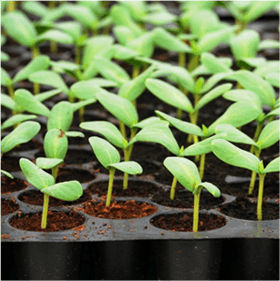
Усиление всхода семян
-
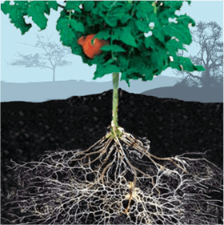
Насыщение корней растений азотом, фосфором, кальцием, магнием.
-
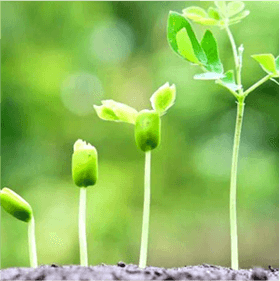
Активизация процессов метаболизма молодых растений
-
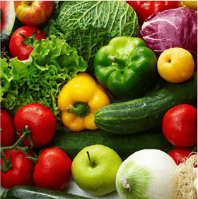
Повышение урожайности на 50%. В два раза больше спелых плодов в один период плодоношения.
-
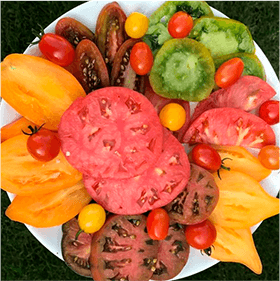
Натуральные сочные овощи, выращенные на натуральном удобрении свосхитительным, ярким вкусом.
От проращивания семян до получения урожая - меньше 5ти месяцев
Секрет активатора роста растений заложен в уникальной формуле. AgroMax - высококонцентрированный препарат, имеющий в составе более 40 ключевых микроэлементов.
удобная форма для удобрения земли
-
Биогумус
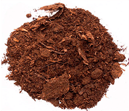Концентрированный конский навоз насыщает землю большим количеством углекислого газа, усиливает скорость поступления питательных веществ в листья и плоды растения.
-
АЗОТОБАКТЕРИИ
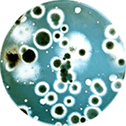Восстанавливают и структурируют плодородную почву. Способствуют активному размножению полезных бактерий и улучшению их симбиоза с растениями.
-
Фосфор
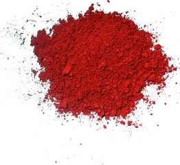Главный источник энергии для роста растений. Ускоряет всход, укоренение, цветение и плодоношение всех растений.
-
Кальций
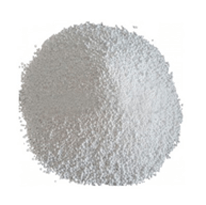Часть обязательного питания для растений, формирует здоровый иммунитет растения
-
Магний
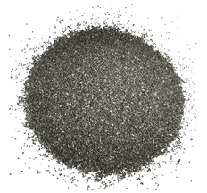Помогает усваивать максимум питательных веществ из почвы, воды, солнечного света.
-
Азот
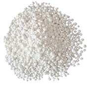Делает стенки растения твердыми, листву сочной, цветы и плоды крупными и насыщенными вкусом.
AgroMax
Мнение эксперта: Огород будет приносить вам радость круглый год!
За 6 лет тестирования активатора роста AgroMax мы получили более 40 000 отзывов от профессиональных садоводов и дачников-любителей со всей России. Концентрат представляет из себя по-настоящему инновационный продукт, сочетающий в себе все известные разработки в области агрономии и сельского хозяйства. Спектр действия концентрата огромен, он ускоряет всход семян, рост зеленой части растения, цветение и плодоношение. Мы добились того, что средняя продолжительность плодоношения растения в тепличных условиях - 4-5 месяцев! Почти полгода непрерывного сбора крупных, сочных, вкусных плодов без нитратов и концерагенов. Это настоящий прорыв в
Александра Григорьева, Аграном, Член Союза Агрономов РФ.
Максимальное увеличение урожайности с AgroMax ®
Испытания активатора роста AgroMax и сравнение препарата с конкурентами дал ученым более полную картину действия. В результате исследований выяснилось:
-
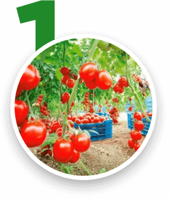
усиливает рост овощных, садовых и злаковых культур
-
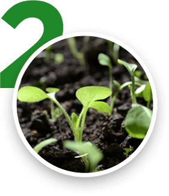
всход любых семян, в том числе экзотических плодоносящих растений.
-
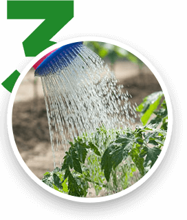
концентрирование всех известных удобрений на рынке.
-
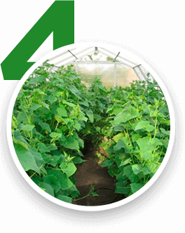
больше питательных веществ поступают по стволу растения в листья и плоды.
Внимание! Недобросовестные производители добавляют химию в удобрения!
Вы замечали, что под видом "натуральных", многие производители продают удобрения с вредными, химическим образом синтезированными веществами?
-
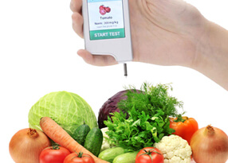
Ядохимикаты
Отлично убивают вредителей и сорняки, но неизбежно проникают в зелень и плоды. Попадая в пищу, приводят к пищевым отравлениям и инфекциям.
-
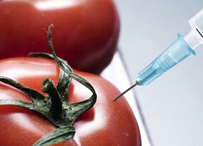
Инсектициды
Уничтожают большинство нассекомых, но запрещены в удобрениях на всей территории РФ. Приводят к болезни и смерти скота, домашних животных.
-

Пестициды
Избавляют от сорняков злаковые и овощные культуры. При вдыхании человеком ведет к болезням дыхательных путей, легких и сердца.
Напоминаем, что жидкий концентрат "AgroMax" является полностью органическим препаратом и не содержит компонентов химической промышленности.
Как использовать AgroMax ® в саду, на участке и в теплице?
Концентрат AgroMax ® идеально подходит для удобрения растений в любых условиях и в любое время года. Для достижения великолепного результата необходимо следовать правилам:
-
1
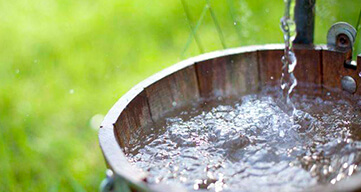Содержимое 1 упаковки смешивается с 10-20 литрами воды. Оставить настояться на 5-10 минут.
-
2
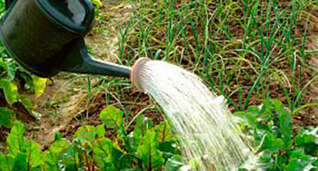Для полива можно использовать пластиковые или железные лейки и ведра. Полив осуществляется обильно вокруг растений.
-
3
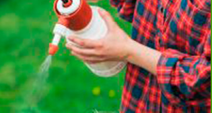С помощью опрыскивателя распылите раствор на листву и цветки для опыления, усиления цветения и плодоношения.
- Полностью безопасен в использовании
- Безвреден для детей и домашних животных
- Замедляет рост сорняков
- Отпугивает вредителей
Мнения садоводов об активаторе роста AgroMax ®
Как сделать заказ на AgroMax® и получить активатор роста уже завтра?
-
ЗАЯВКА
Заполняете простую форму на сайте
-

КОНСУЛЬТАЦИЯ
Наш менеджер проконсультирует вас и оформит заказ
-
ДОСТАВКА
Надежно упаковываем и отправляем ваш заказ
-
ПОЛУЧЕНИЕ
Вы получаете посылку и оплачиваете
AgroMax®
Органическое удобрение для усиления роста садовых культур
На 50% больше урожая каждый месяц
- 1 упаковка = 50 килограммам конского навоза для удобрения
- 100% органическое удобрение, насыщенное питательными веществами
- Всход любых семян в 2 раза быстрее
- Стимулирует рост саженцев и черенков
*при заказе набора
Успейте оформить заказ ПО АКЦИИ!
Специальная цена 149 руб
ДО КОНЦА АКЦИИ ОСТАЛОСЬ
Специальная цена 149 руб